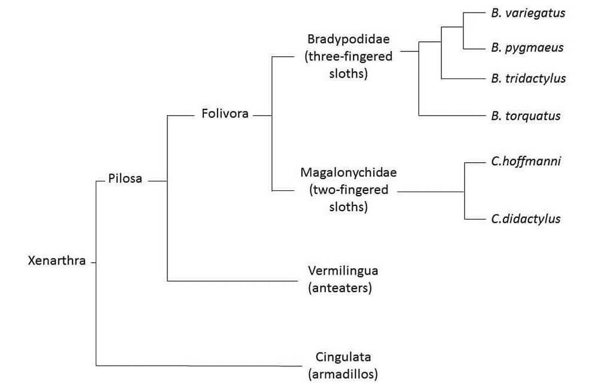

ADOPT A SLOTH

LEARN ABOUT SLOTHS
What are Sloths?
There are 6 species of sloth split between two very different families: the three-fingered (Bradypodidae, genus: Bradypus) and the two-fingered (Megalonychidae, genus: Choloepus). Although commonly referred to as three-toed and two-toed, all sloths actually have three toes; the true difference lies in the number of digits on the forelimb (the fingers).This is now recognized in numerous publications as the correct terminology for these animals.
Phylogeny and Evolutionary History
Although two-fingered and three-fingered sloths have remarkably similar lifestyles, recent research suggests that the two families are actually only distant relatives, adopting their upside-down arboreal lifestyles independently through a process of convergent evolution. Both the Bradypus and Choloepus tree sloths that we see today evolved from giant ground sloths, of which there were thought to be over 80 different genera with the largest (Megatherium) reaching over 6 meters in height. It is predicted that these gentle giants went extinct approximately 10,000 years ago due to an expanding population of human hunters. There is even evidence to suggest that several different species of marine sloth existed, feeding from sea grass and seaweed in shallow water.
Together with armadillos and anteaters, both genera of sloth make up the ancient superorder Xenarthra. Due to a lack of evidence, it is unclear exactly when the different xenarthrans diverged, but morphological and molecular data suggest that the sloths and anteaters are more closely related to each other than they are to armadillos. Further molecular research has shown that the maned sloths (B. torquatus) split from the brown-throated (B. variegatus) and the pale-throated (B. tridactylus) sloths over 12 million years ago, with the latter two species diverging only 5-6 million years ago. The Hoffmann’s (C. hoffmanni) and Linnaeus’s (C.didactylus) two-fingered sloths diverged approximately 6-7 million years ago.
Although commonly grouped together, the two-fingered and three-fingered sloths are actually very different animals with very different lifestyles. These discrepancies can be seen in the biology, ecology and morphology of each genus.

Sloth Intelligence
How intelligent are sloths? This is a very poorly studied topic. It is true that sloths have small brains compared to their body size, however scientists are now realizing that this actually doesn’t relate to intelligence at all. The brains of sloths might be small but they are very much focused on the specific skills that they need for survival. For example, the section of the brain that controls forelimb movement is well developed for careful climbing, and the sloths spatial memory is particularly impressive. Having a good spatial memory is important for sloths as they are almost completely blind, navigating around their home ranges using just their memory and sense of smell! However, the sloths social skills and problem solving abilities are somewhat lacking, which often leads to them being labelled as “stupid”.
Sloth Lifespan
As the sloths teeth and nails grow continuously throughout their life, it is impossible to determine the age of a wild sloth. There are a lot of incorrect figures cited for the lifespan of sloths, however the truth is that we still do not know how long they live for in the wild. Captive two-fingered (Choloepus) sloths are known to reach 40-50 years old, however sloths were not bred in captivity until 50 years ago and so there has been little chance for any individual to exceed this figure. In addition, no one has ever followed a wild sloth from birth until death, and so any estimations on wild sloth longevity are based on no factual evidence at all. When we consider that sloths in captivity often have elevated stress levels, an excessively sedentary lifestyle and an unnatural diet that is overly high in fructose (diets in zoos typically consist of fruit and vegetables as they cannot source the new-growth tropical leaves that form the sloths natural diet), it seems likely that wild sloths may live longer in the wild than they do in captivity.